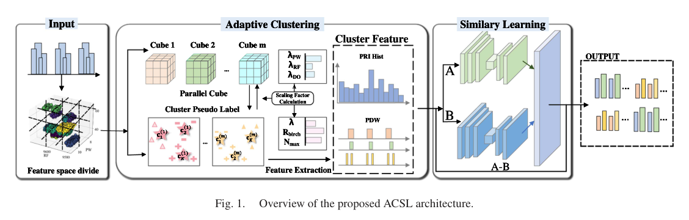
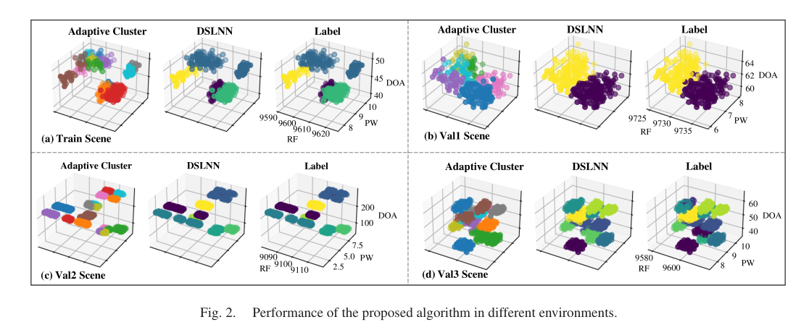

研究导读 · IEEE Signal Processing Letters · 2025
相似性学习与多场景自适应聚类
Adaptive Clustering With Similarity Learning for Enhanced Multi-Scenario Radar Signal Processing
IEEE Signal Processing Letters, 32, 1840-1844 (2025)
研究问题
雷达信号分选在高密度、强交织和多场景数据分布变化下容易退化，完全监督深度模型又依赖大量标注数据。
核心方法
ACSL 先在 RF、PW、DOA 等特征空间中进行动态分区与自适应缩放，生成并优化伪标签；随后用双分支相似性学习网络结合 PRI 与特征差异判断不同簇是否来自同一雷达。
方法步骤
- Feature partition
按 RF、PW、DOA 对 PDW 流进行动态分区。
- Pseudo labels
通过自适应聚类和缩放因子生成初始簇。
- PRI relation
计算簇间 PRI 与特征差异。
- Similarity network
判断簇是否应合并为同一雷达源。
代表性发现
雷达信号分选可以先用聚类形成弱标签，再用相似性网络修正簇级关系，从而降低标注依赖。
科学意义
这套流程把无监督聚类、PRI 信息和深度相似性判别组合起来，更贴近真实电子侦察中标签稀缺和场景变化的问题。
科研图


自适应聚类分选架构
None · 架构图展示由初始聚类、伪标签构造、相似性学习和簇关系判别组成的处理流程。
方法把“簇内结构”和“簇间关系”分开建模，减少弱监督场景下伪标签噪声的影响。
图源：IEEE Signal Processing Letters, 32, 1840-1844 (2025)。 © 2025 IEEE。
图像复用权待核验


多场景分选表现
None · 该组图表覆盖不同场景复杂度下的分选结果，用于观察方法在实际雷达信号中的稳定性。
图表强调该方法不是只对单一仿真条件有效，而是面向多类复杂电磁环境。
图源：IEEE Signal Processing Letters, 32, 1840-1844 (2025)。 © 2025 IEEE。
图像复用权待核验
适用条件
这篇论文可作为雷达信号分选中“弱监督 + 相似性判断”的方法模板，适合从伪标签质量和簇合并策略两个角度阅读。